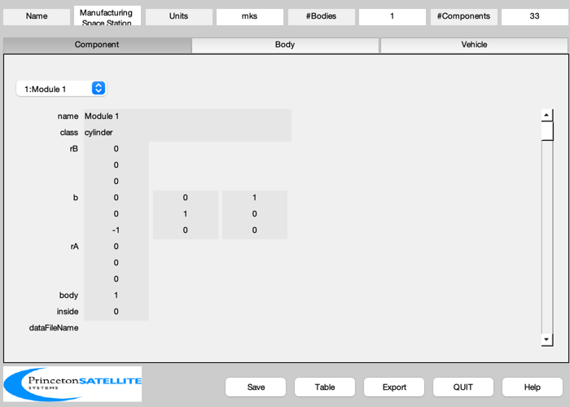
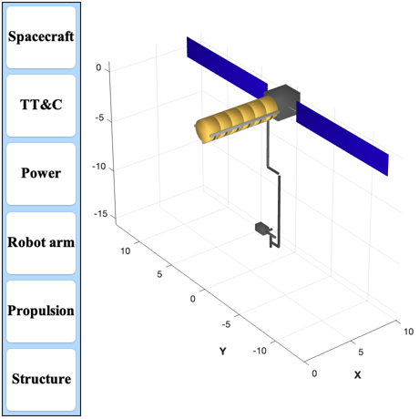
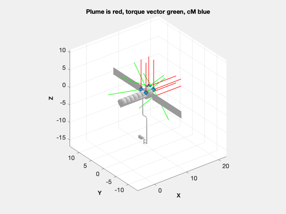
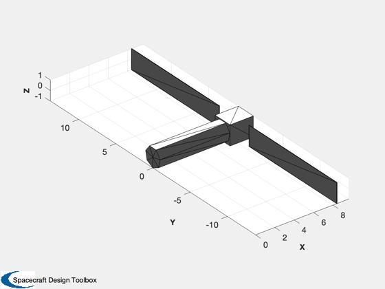

Contents
- Design a manufacturing space station
- Properties
- Initialize BuildCADModel and create the Core body
- Add subsystems
- Update the mass properties to produce the tables
- Show the vehicle and save the components
- Export to an obj file for use by other software
- Compute the thruster torque distribution
- Make a simple CAD Model for disturbance analyses
- Save the data for the simulation
Design a manufacturing space station
Large space station with a Hall thruster for stationkeeping, hydrazine RCS thrusters, and a robot arm. There is an option for the solar arrays in the model to be deployed or not. This script creates both a full model and a simpler model for disturbance analysis. Both the full model, the thruster layout, and the simple model will be displayed in figures.
If file saving is turned on, this script saves the following:
- ManufacturingSpaceStation.mat, the CAD model data structure - ManufacturingSpaceStation.tex, a latex table - either the file SpaceStationProps.mat or SpaceStationPropsUndeployed.mat with the simplified surface model and thruster layout data - SpaceStationThruster.txt, the thruster layout data
It will also export ManufacturingSpaceStation.obj as this is needed by the thruster layout step.
See also AtmDens2, BuildCADModel, CreateBody, CreateComponent, ExportOBJ, ThrusterCAD, XenonTank, VOrbit, HallThrusterArray, ThrusterLayout, Box, Frustrum, DisplayLatexTable, SaveStructure, DrawVertices, PolygonProps, DrawCanadarm3
%-------------------------------------------------------------------------- % Copyright (c) 2025 Princeton Satellite Systems, Inc. % All rights reserved. %-------------------------------------------------------------------------- % Since version 2025.1 %-------------------------------------------------------------------------- % Script control deployed = true; saveFiles = false; % Constants rhoAl = 2700; rhoGlass = 2500; rhoXe = 3100; % km/m^2 rhoTi = 4502; % kg/m^3 rE = 6378.165; tRefuel = 5*365.25*24*3600; % 5 years sigTi = 0.5*880e6; % N/m^2 with a factor of safety of 2 effHall = 0.6; uEHall = 20000; % m/s massREA = 0.3; massHyd = 200; pHyd = 350*6895; rhoHyd = 1000;
Properties
% Orbit h = 350; % km cD = 2.7; % Tank pTank = 350*6895; % Manufacturing modules nModules = 6; rModule = 1.0; % m lModule = 1.2*ones(1,6); % m massModule = 500*ones(1,6); useModule = [1 1 1 1 1 1]; % Bus lBus = 2*lModule(1); % m massBus = 2000; % Rail for the robot arm xRail = sum(lModule(1:6)); yRail = 0.1; zRail = 0.1; massRail = xRail*yRail*zRail*rhoAl*0.1; % Keel xKeel = sum(lModule(1:6)); yKeel = 0.2; zKeel = 0.2; massKeel = xKeel*yKeel*zKeel*rhoAl*0.1; % Solar Panels power = 20000; eff = 0.31; areaSP = power/(eff*1367)/2; wSP = 2*rModule; lSP = areaSP/wSP; tSP = 0.04; lStrut = rModule; massPanel = wSP*tSP*lSP*rhoGlass; massStrut = lStrut*tSP^2*rhoAl; % Hall Thruster massHallThruster = 3; wHallThruster = 0.5; rHallThrusterGimbal = 0.25*wHallThruster; lHallThrusterGimbal = 0.5*wHallThruster; massHallThrusterGimbal = 0.75; % Fuel Tank r = rE + h; v = VOrbit(r,r)*1000; fHall = 0.5*AtmDens2(h)*cD*v^2*(areaSP+4*rModule^2); powerHall = 0.5*fHall*uEHall/effHall; massXe = fHall*tRefuel/uEHall; volXe = massXe/rhoXe; rXeTank = (0.75*volXe/pi)^(1/3); tWall = pTank*rXeTank/(2*sigTi); massTank = tWall*4*pi*rXeTank^2; % Robot arm rLink = 0.2; % m lLink = 2; % m nLinks = 3; % m tLink = 0.002; % Thickness of link strut m angY = [0 0 pi/4 pi/4]; % Just for the picture massLink = tLink*2*pi*rLink*lLink*rhoAl; xRobotArm = 2.2*lModule(1);
Initialize BuildCADModel and create the Core body
BuildCADModel( 'initialize' ); BuildCADModel( 'set name' , 'Manufacturing Space Station' ); BuildCADModel( 'set units', 'mks' ); % Core m = CreateBody('make','name','Core'); BuildCADModel('add body', m ); % This creates the connections between the bodies BuildCADModel( 'compute paths' ); % Modules rA = [0;0;0]; for k = 1:nModules if( useModule(k)) name = sprintf('Module %d',k); m = CreateComponent( 'make', 'cylinder', 'rUpper', rModule, 'rLower',rModule,'h',lModule(k),... 'n',20,'faceColor', 'gold foil','rA', rA,'b',[0 0 1;0 1 0;-1 0 0],... 'mass', massModule(k), 'name', name, 'body', 1, 'inside', 0 ); BuildCADModel( 'add component', m ); end rA(1) = rA(1) + lModule(k); end rA(1) = rA(1) + lBus/2; rABus = rA; m = CreateComponent( 'make', 'box', 'x', lBus, 'y',2*rModule,'z',2*rModule,... 'faceColor', 'Steel','rA', rABus,... 'mass', massBus, 'name', 'Bus', 'body', 1, 'inside', 0 ); BuildCADModel( 'add component', m ); % Add the keel and lateral supports rA = [sum(lModule(1:3));0;-rModule-zKeel/2]; m = CreateComponent( 'make', 'box', 'x', xKeel, 'y',yKeel,'z',zKeel,... 'faceColor', 'aluminum','rA', rA,... 'mass', massKeel, 'name', 'Keel', 'body', 1, 'inside', 0 ); BuildCADModel( 'add component', m ); rA = [sum(lModule(1:3));-rModule-zKeel/2;0]; m = CreateComponent( 'make', 'box', 'x', xKeel, 'y',yKeel,'z',zKeel,... 'faceColor', 'aluminum','rA', rA,... 'mass', massKeel, 'name', 'Lateral 1', 'body', 1, 'inside', 0 ); BuildCADModel( 'add component', m ); rA = [sum(lModule(1:3));rModule+zKeel/2;0]; m = CreateComponent( 'make', 'box', 'x', xKeel, 'y',yKeel,'z',zKeel,... 'faceColor', 'aluminum','rA', rA,... 'mass', massKeel, 'name', 'Lateral 2', 'body', 1, 'inside', 0 ); BuildCADModel( 'add component', m ); % Module supports rA = [lModule(1)/2-lModule(1)/12;0;0]; rI = rModule; rO = 1.01*rModule; lS = lModule(1)/6; massSupport = rhoAl*pi*(rO^2-rI^2)*lS; for k = 1:6 [v,f] = PartialThickDisk(rI,rO,lS,12,-pi/2,pi/2); s = sprintf('Module Support %d',k); m = CreateComponent( 'make', 'generic', 'vertex',v, 'face',f,... 'faceColor', 'steel','rA', rA,'b',[0 0 1;0 1 0;-1 0 0],... 'mass', massSupport, 'name', s, 'body', 1, 'inside', 0 ); BuildCADModel( 'add component', m ); rA(1) = rA(1)+lModule(1); end % Solar panels and support struts if( deployed ) signY = 1; for k = 1:2 nameP = sprintf('Solar Panel %d',k); rAW = [sum(lModule(1:6))+lBus/2;signY*(rModule+lStrut+lSP/2);0]; m = CreateComponent( 'make', 'box', 'x', tSP, 'y',lSP,'z',wSP,... 'faceColor', 'solar cell','rA', rAW,... 'mass', massPanel, 'name', nameP, 'body', 1, 'inside', 0 ); BuildCADModel( 'add component', m ); nameS = sprintf('Solar Panel Strut %d',k); rAW(2) = signY*(rModule+lStrut/2); m = CreateComponent( 'make', 'box', 'x', tSP, 'y',lStrut,'z',tSP,... 'faceColor', 'aluminum','rA', rAW,... 'mass', massStrut, 'name', nameS, 'body', 1, 'inside', 0 ); BuildCADModel( 'add component', m ); signY = -signY; end else signY = 1; for k = 1:2 nameP = sprintf('Solar Panel %d',k); rA = rABus + [-lSP/2;signY*(rModule);0]; lSPD = 0.5*lSP; m = CreateComponent( 'make', 'box', 'x',lSPD, 'y', tSP,'z',wSP,... 'faceColor', 'solar cell','rA', rA,... 'mass', massPanel, 'name', nameP, 'body', 1, 'inside', 0 ); BuildCADModel( 'add component', m ); nameS = sprintf('Solar Panel Strut %d',k); rA = rA + [lSP/2;-signY*(rModule);0]; m = CreateComponent( 'make', 'box', 'x',lStrut, 'y',tSP,'z',tSP,... 'faceColor', 'aluminum','rA', rA,... 'mass', massStrut, 'name', nameS, 'body', 1, 'inside', 0 ); BuildCADModel( 'add component', m ); signY = -signY; end end % Hall Thruster [v, f] = HallThrusterArray( wHallThruster ); rA = [sum(lModule)+2*rHallThrusterGimbal+lBus;0;0]; b = [0 0 1;0 1 0;-1 0 0]; m = CreateComponent( 'make', 'generic', 'vertex',v, 'face',f,... 'faceColor', 'steel','rA', rA,'b',b,... 'mass', massHallThruster, 'name', 'Hall Thruster', 'body', 1, 'inside', 0 ); BuildCADModel( 'add component', m ); rA = [sum(lModule)+2*rHallThrusterGimbal+lBus;0;-lHallThrusterGimbal/2]; rA = rA -[rHallThrusterGimbal;0;0]; m = CreateComponent( 'make', 'cylinder', 'rUpper',rHallThrusterGimbal, 'rLower',rHallThrusterGimbal,'h',lHallThrusterGimbal,... 'faceColor', 'steel','rA', rA,... 'mass', massHallThrusterGimbal, 'name', 'Hall Thruster Gimbal', 'body', 1, 'inside', 0 ); BuildCADModel( 'add component', m ); [v,f,dTank] = XenonTank(massXe); rA = [sum(lModule)+2*rHallThrusterGimbal+lBus;0;0] - [1;0;0.8]; m = CreateComponent( 'make', 'generic', 'vertex',v, 'face',f,... 'faceColor', 'steel','rA', rA,... 'mass', massXe+dTank.massTank, 'name', 'Xenon tank', 'body', 1, 'inside', 1 ); BuildCADModel( 'add component', m ); d = DrawCanadarm3( 'initialize' ); x = zeros(7,1); [v,f] = DrawCanadarm3( 'vectors', x, d ); m = CreateComponent( 'make', 'generic', 'vertex',v, 'face',f,... 'faceColor', 'steel','rA', rA,... 'mass', 100, 'name', 'Robot Arm', 'body', 1, 'inside', 1 ); BuildCADModel( 'add component', m ); % RCS hydrazine thrusters lThruster = 0.026; dConeThruster = 0.02; r = rModule; x = lBus/2; rThruster = rABus + [x x -x -x x x x x;... r -r r -r r r -r -r;... r r r r r -r r -r]; uThruster = [ 0 0 0 0 1 1 1 1;.... 0 0 0 0 0 0 0 0;.... 1 1 1 1 0 0 0 0]; for k = 1:8 [v, f] = ThrusterCAD( uThruster(:,k), dConeThruster, lThruster, 12, 0.7*dConeThruster,lThruster ); s = sprintf('Thruster %d',k); m = CreateComponent( 'make', 'generic', 'v', v, 'f', f, 'faceColor', [0 0.5 0.5],... 'rA', rThruster(:,k), 'mass', massREA , 'name', s, 'body', 1, 'inside', 0 ); BuildCADModel( 'add component', m ); end % Hydrazine tank vol = massHyd/rhoHyd; rHyd = (0.75*vol/pi)^(1/3); m = CreateComponent( 'make', 'sphere', 'radius',rHyd,... 'faceColor', 'steel','rA', rABus,... 'mass', massHyd+massTank, 'name', 'Hydrazine tank', 'body', 1, 'inside', 1 ); BuildCADModel( 'add component', m );
Add subsystems
BuildCADModel( 'add subsystem', 'TT&C', {'avionics', 'imu', 'star camera'} ); BuildCADModel( 'add subsystem', 'Power', {'battery' 'Solar'} ); BuildCADModel( 'add subsystem', 'Robot arm', {'link' 'rail'} ); BuildCADModel( 'add subsystem', 'Propulsion', {'tank','thruster' 'gimbal'} ); BuildCADModel( 'add subsystem', 'Structure', {'module' 'bus' 'keel'} );
Update the mass properties to produce the tables
BuildCADModel( 'update body mass properties' );
Show the vehicle and save the components
g = BuildCADModel( 'get model' ); BuildCADModel('show vehicle'); if saveFiles SaveStructure(g,'ManufacturingSpaceStation'); end
Export to an obj file for use by other software
ExportOBJ(g,'ManufacturingSpaceStation'); inr = diag(g.mass.inertia)'; inrC1 = LatexExp(inr(1),'8.2'); inrC2 = LatexExp(inr(2),'8.2'); inrC3 = LatexExp(inr(3),'8.2'); s = {}; k = 1; s{k,1} = 'Power'; s{k,2} = sprintf('%8.2f W',power); k = k + 1; s{k,1} = 'Orbit Altitude'; s{k,2} = sprintf('%8.2f km',h); k = k + 1; s{k,1} = 'Mass'; s{k,2} = sprintf('%8.2f kg',g.mass.mass); k = k + 1; s{k,1} = '[$I_{xx}~I_{yy}~I_{zz}$]'; s{k,2} = sprintf('[%s %s %s] kg-m$^2$',inrC1,inrC2,inrC3); k = k + 1; s{k,1} = 'Center of Mass'; s{k,2} = sprintf('%8.2f %8.2f %8.2f m',g.mass.cM); k = k + 1; s{k,1} = 'Mass Xenon'; s{k,2} = sprintf('%8.2f kg',massXe); k = k + 1; s{k,1} = 'Hall Thruster thrust'; s{k,2} = sprintf('%8.2f mN',fHall*1000); k = k + 1; s{k,1} = 'Hall Thruster power'; s{k,2} = sprintf('%8.2f kW',powerHall/1000); DisplayLatexTable(s) if saveFiles CreateLatexTable(s,'ManufacturingSpaceStation'); % to save file end
Power 20000.00 W
Orbit Altitude 350.00 km
Mass 10641.71 kg
[$I_{xx}~I_{yy}~I_{zz}$] [3.54 $\times 10^{5}$ 7.33 $\times 10^{4}$ 4.21 $\times 10^{5}$] kg-m$^2$
Center of Mass 6.86 -0.00 -0.03 m
Mass Xenon 159.47 kg
Hall Thruster thrust 20.21 mN
Hall Thruster power 0.34 kW
Compute the thruster torque distribution
ThrusterLayout( 'initialize', 'ManufacturingSpaceStation.obj' ); [t,f,u] = ThrusterLayout( 'update', -uThruster, rThruster, g.mass.cM ); fprintf(1,'\nFeasible = 1 means the torque can be achieved\n'); b = [1 -1 0 0 0 0;0 0 1 -1 0 0; 0 0 0 0 1 -1]; for k = 1:6 fprintf(1,'Torque demand = [%4.1f %4.1f %4.1f] u = [%4.2f %4.2f %4.2f %4.2f %4.2f %4.2f %4.2f %4.2f] Feasible = %d\n',b(:,k),u(:,k),f(k)); end if saveFiles fThruster = fopen('SpaceStationThruster.txt','wt'); for k = 1:size(uThruster,2) fprintf(fThruster,'%8.4f %8.4f %8.4f %8.4f %8.4f %8.4f\n',rThruster,uThruster); end fclose(fThruster); end mass = g.mass;
Feasible = 1 means the torque can be achieved Torque demand = [ 1.0 0.0 0.0] u = [0.00 0.00 0.00 1.00 0.17 0.00 0.17 0.00] Feasible = 1 Torque demand = [-1.0 0.0 0.0] u = [0.00 0.00 1.00 0.00 0.17 0.00 0.17 0.00] Feasible = 1 Torque demand = [ 0.0 1.0 0.0] u = [0.18 0.18 0.00 0.00 0.00 0.00 0.00 0.00] Feasible = 1 Torque demand = [ 0.0 -1.0 0.0] u = [0.00 0.00 0.00 0.00 0.49 0.00 0.49 0.00] Feasible = 1 Torque demand = [ 0.0 0.0 1.0] u = [0.00 0.00 0.00 0.00 0.49 0.51 0.00 0.00] Feasible = 1 Torque demand = [ 0.0 0.0 -1.0] u = [0.00 0.00 0.00 0.00 0.00 0.00 0.49 0.51] Feasible = 1
Make a simple CAD Model for disturbance analyses
[v,f] = Frustrum(rModule,rModule,sum(lModule),8); v = ([0 0 1;0 1 0;-1 0 0]*v')'; [vB,fB] = Box(lBus,2*rModule,2*rModule); vB(:,1) = vB(:,1) + sum(lModule)+lBus/2; f = [f;fB+size(v,1)]; v = [v;vB]; % Solar wings rAW = [sum(lModule(1:6))+lBus/2;rModule+lStrut+lSP/2;0]; [vW,fW] = Box(tSP, lSP,wSP); vW = vW + rAW'; rAW = [sum(lModule(1:6))+lBus/2;-rModule-lStrut-lSP/2;0]; [vW2,fW2] = Box(tSP, lSP,wSP); vW2 = vW2 + rAW'; fW = [fW;fW2+size(vW,1)]; vW = [vW;vW2]; [a,n,r] = PolygonProps(v,f); [aW,nW,rW] = PolygonProps(vW,fW); dSurf = struct('aB',a,'nB',n,'rB',r,'aW',aW,'nW',nW,'rW',rW); % Combine to draw f = [f;fW+size(v,1)]; v = [v;vW]; DrawVertices(v,f,'Simple Model');
Save the data for the simulation
if saveFiles if( deployed ) save('SpaceStationProps','mass', 'rThruster','uThruster','dSurf') else save('SpaceStationPropsUndeployed','mass', 'rThruster','uThruster','dSurf') end end %-------------------------------------- % $Id: 33eaaa03a2abd39c37fa5fb0510bdc7d6121c823 $